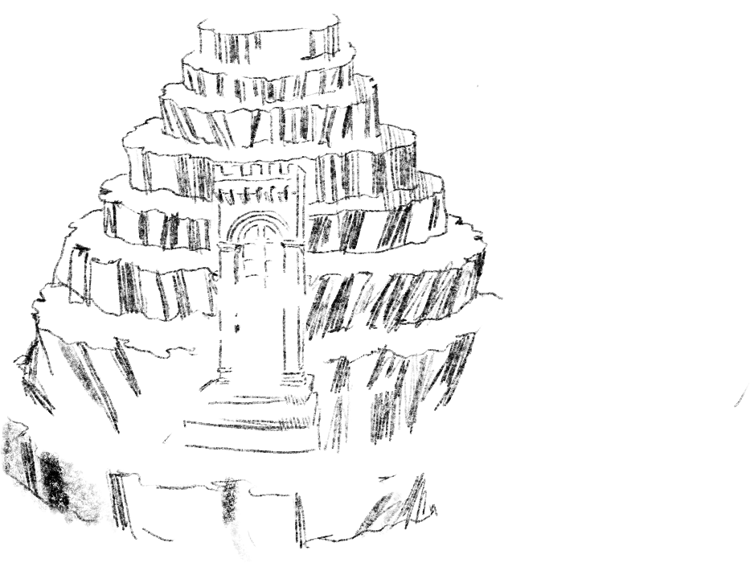
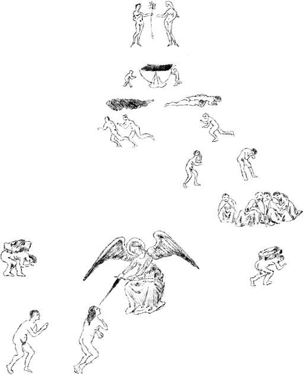
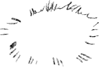
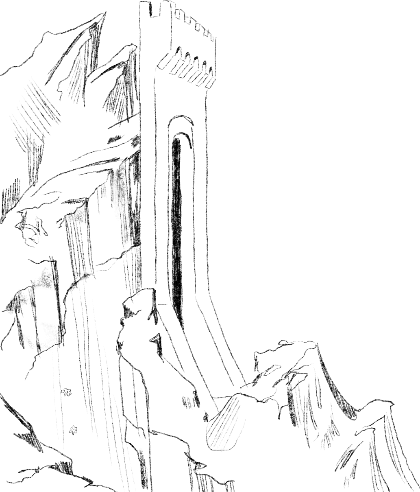
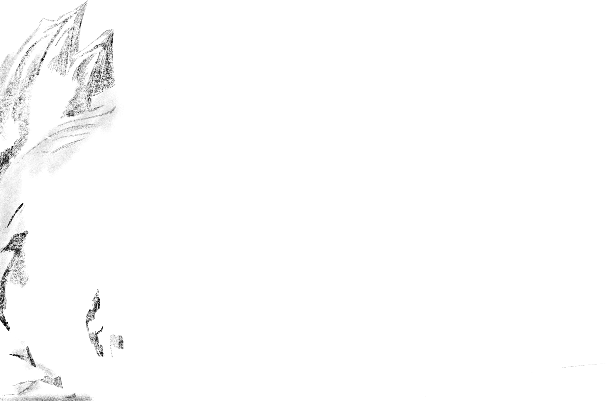
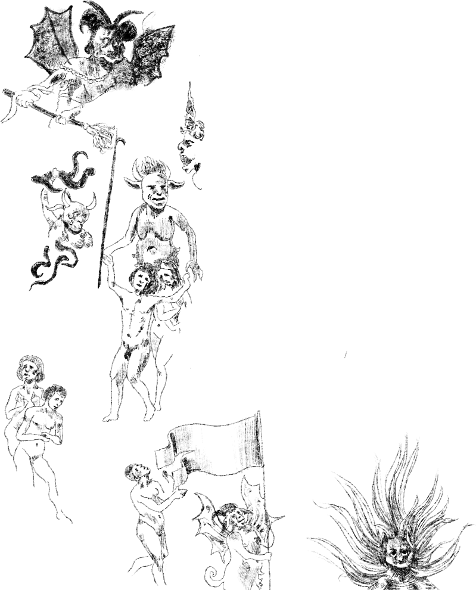
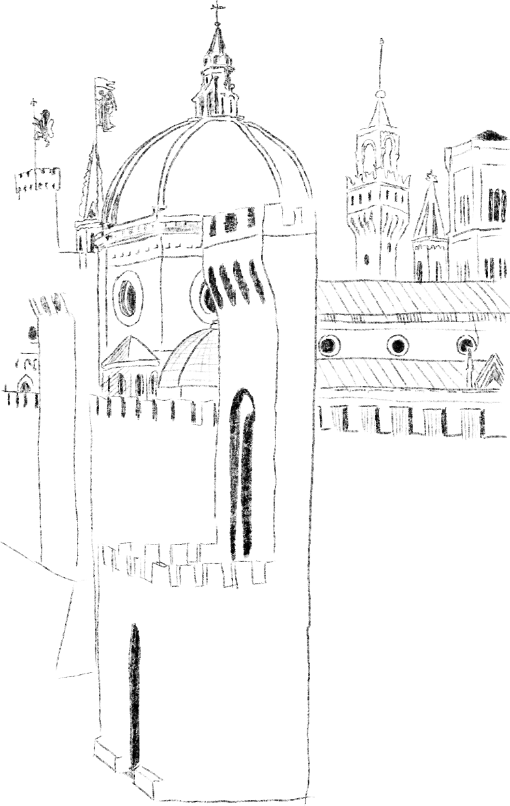
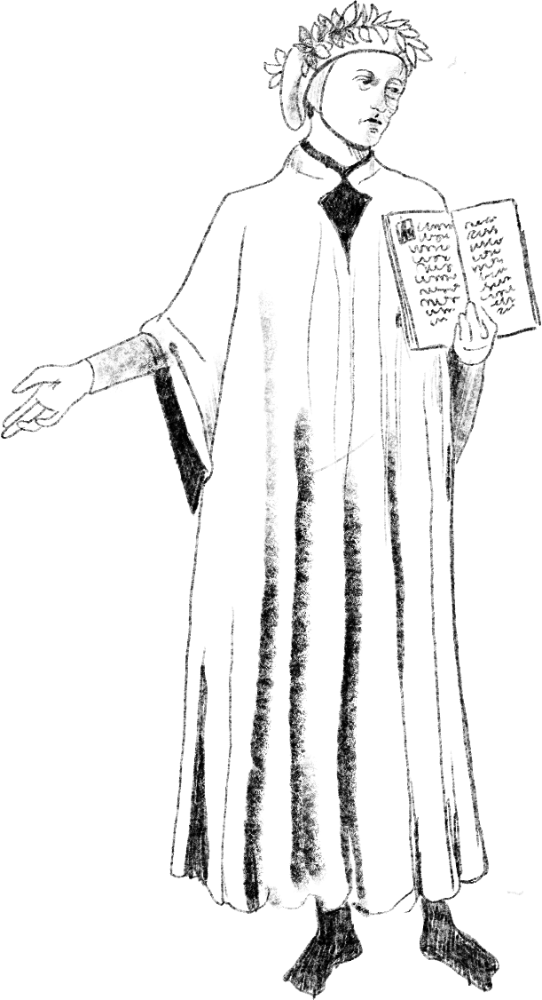
*
The Divine Comedy (Italian: Divina Commedia) is an Italian narrative poem by Dante Alighieri, begun c. 1308 and completed c. 1321, shortly before the author's death. It is widely considered the pre-eminent work in Italian literature and one of the greatest works of Western literature. The poem's imaginative vision of the afterlife is representative of the medieval worldview as it existed in the Western Church by the 14th century. It is divided into three parts: Inferno, Purgatorio, and Paradiso.
The poem explores the condition of the soul following death and portrays a vision of divine justice, in which individuals receive appropriate punishment or reward based on their actions. Allegorically, the poem represents the soul's journey towards God, beginning with the recognition and rejection of sin (Inferno), followed by the penitent Christian life (Purgatorio), then the soul's ascent to God (Paradiso). Dante draws on medieval Catholic theology and philosophy, especially Thomistic philosophy derived from the Summa Theologica of Thomas Aquinas.
In the poem, the pilgrim Dante is accompanied by three guides: Virgil, who represents human reason and guides him through Inferno and most of Purgatorio; Beatrice, who represents divine revelation, theology, grace, and faith, guiding him from the end of Purgatorio onwards; and Saint Bernard of Clairvaux, who represents contemplative mysticism and guides him in the final cantos of Paradiso.
*